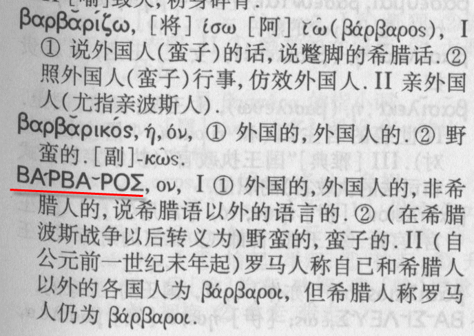
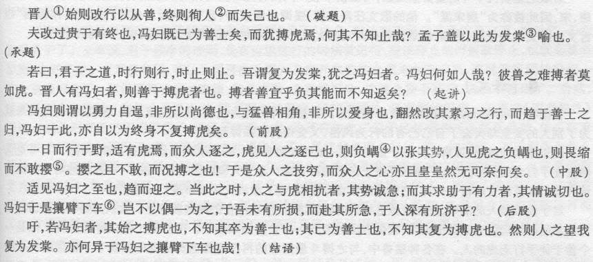
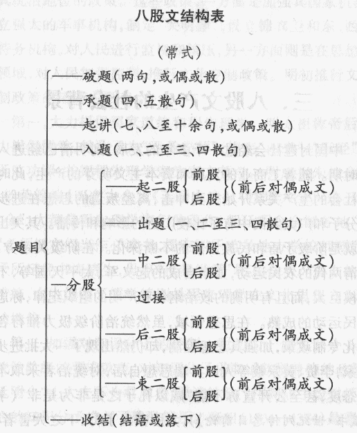
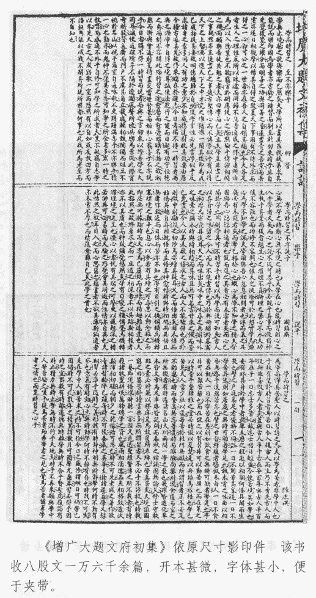
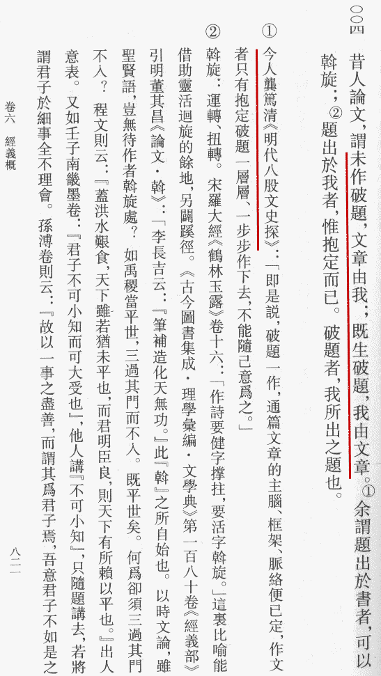

缘起：「科举制下，平均一个人需脱产学习多久才能中举？」
自从废科举兴学校百年来，科举的形式（八股）以及内容（儒学）一直都是千夫所指的负面形象。提及科举，几乎总是千篇一律的以“束缚思想”为主要观点的那几套说辞。几乎没有人有兴趣愿意了解真正的历史上的科举到底是怎么一回事。
另一方面，金榜题名的光辉与荣耀，如今还确实存在于旧小说、戏曲和古装剧当中。作为形式的科举千余年来兴盛不衰，即便从以八股取士算起也有了五百年。
如果科举真的是那么废柴，那么曾经痴迷科举十来个世纪的汉人也自然是毫无疑问的智障……可能么？即便如今看来是智障，也要看和谁来比，和哪个时代来比。
希望简单介绍一下我所知道的，也就是通过其他前辈学者们整理抢救出来的有关八股时代科举的一些内容。由于本人也不是专业人士，也不是八股或科举爱好者，掌握的材料不过就是几种公开出版物。所以呢，这个连载其实就是对照实体书，对于网上材料的补充和更正。
体例比较自由。基本上，凡是网上可以找到的，只是顺便一提，都不再赘述；网上找不到的，或者网上内容不完全正确的，补充说明一下；顺便扫一些实体书上面的插图来丰富版面。想起啥写啥，想不起来的，“答读者问”也可以。
主要史实和术语均采用明朝标准，这是因为八股始创于洪武～天顺，成熟于成化～弘治，正德～嘉靖达到极盛，隆庆～万历有所变革，天启朝衰败颓废，崇祯朝回光返照。终明一代，八股完成了一个完整的生命周期，已经被顾炎武等人痛定思痛了。按理说接下来的满清也好，顺也好，大西也好，应该有点新朝气象，采取新的考试形式才对。可是，由于通古斯野人（※①）……（此处删去若干字）……只能照葫芦画瓢毫无创新能力。
有一些实例选用满清时期的素材。毕竟越是近世，史料便越丰富。况且满清垮台之后的民国，又没有满洲人那禁毁篡改的传统风俗习惯，大量档案得以保留。又因为近世人物往往形象清晰，容易引起读者共鸣，比如鲁迅爷爷的科举舞弊案……
——————受过教育的皇汉的分割线——————
第一段，先说乡试，因为缘起中提到的“中举”，其实就是指中了举人，也就是乡试合格的意思。
先说时间。
百度百科提到乡试，说三年一比，每逢子午卯酉年为正科，其他时间为恩科。
对的，但是有例外多考的，也有例外而少考的，对于后者还有补救的选拔措施。
洪武首开科举时，百废待兴，连续三年考了三科招揽人才，当然结果不是很好，后面会提到。
建文四年燕王反，壬午科乡试在应天府、浙江等地停办；永乐元年补了一次，北京周边在永乐三年又补了一次。
宣德元年汉王反，丙午科乡试在顺天府停办。
正德十四年宁王反，乙卯科乡试江西停办；嘉靖元年壬午科，上命并取一百九十人，以补前度之缺。
百度百科提到乡试，说连考三场，每场三天。
这是对了一半，连考三场没错，每场三天的是满清，而明朝每场只有一天，当天考完了出去隔两天再入场。
具体说，八月初九第一场、八月十二第二场，八月十五第三场。
制度上的规定可参考《明史·选举志》，网上能找到，想来继承科举制度的满清不至于过分禁毁篡改。
佐证还有《朱舜水集》，朱舜水答日本安东守约问时称“大明取士，八月初九第一场”；“十二日第二场”；“十五日第三场”。
另有：
洪武十七年乡试条例，“令试之日，黎明举人入场，黄昏纳卷，未毕者给烛三支，烛尽文不成者扶出”；
成化二年乡试条例，“举人试日四更搜入”，“至黄昏誊正，未毕者给烛，不完者扶出”。
明朝乡试每场只考一天应该是没有疑问了也～
——————活跃气氛分割线——————
活跃气氛贴个图，以“乡试”为题的游戏文章，集四书里面的句子做成的八股，难度极大。（有关八股的体例以后再提，不熟悉的读者可能还体会不到其难度）
 集四书句「乡试」
集四书句「乡试」
——————引经据典分割线——————
※①野人，来自英文「Barbarian」的意译。
而Barbarian来自法文「Barbarien」，而法文Barbarien则来自拉丁文「Barbarous」，到这里还都是“野蛮人”或者“没有教养的人”的意思……有意见的请对号入座。
而拉丁文Barbarous来自古希腊文「βαρβαροσ」，这里意思就变了，应该说这才是这个词的本意——异族的。
注意希腊文的“西格玛”在词尾时应该是另一种写法，类似“s”，只不过输入法软键盘只能打出通用的这一种来，见谅。
辞典截图：

ΒΑΡΒΑΡΟΣ
这本辞典我真的有，2004年北京图书大厦买的。
以前在群里贴出过我的古典语文教材照片，大致有以下几本：
1，《拉丁语汉语词典》，商务印书馆，1988年7月北京1版1刷，定价人民币12.45元，1990年购于王府井外文书店。
2，《古希腊语汉语词典》，商务印书馆，2004年6月北京1版1刷，定价人民币88.00元，2004年购于北京图书大厦。
然后这十几年来寻找教材的时候就悲剧了……
书店没有拉丁语和希腊语的教材；
询问北外毕业的同事，得知拉丁文没有专业，只有选修课，课程内容简单得和医学生物学专业的没区别；
希腊文当时只有上海外国语大学有个隔几年一招的班，这还是托了雅典奥运的福才知道。
其实，这是我第一次发现，不依赖地理位置和硬件设施的纯粹的文科专业以及资源，居然有北京没有而外地有的。
然后带着遗憾，2005年底在京都买到了拉丁文和希腊文教材。
3，《初级拉丁语入门》（初級ラテン語入門），定价1900日元不含税。
4，《古典希腊语初步》（古典ギリシア語初步），定价3500日元不含税。
5，《希腊语初步（修订版）》（ギリシア語初步【改訂版】）定价2100日元不含税，这是现代希腊语。
前一阵顺便提到了有关古希腊语的事情，想起来了就去网上书店搜，惊喜的发现中文版的古典语文教材也出现了……于是相关的书都买了～
这些照片都在群里贴过，某粉丝提到的黑道、明辉、某熊都见到过，可以作证，这里不贴图了。
之所以这么谨慎，那是由于这一阵尤其是今年以来和化外之地的野人及其智障粉丝较劲的缘故。
我说点啥都被智障们以己度人的当成吹牛；真拿出证据来智障们又开始洗地了；咱要是较真，那自然就成了“你们皇汉打压我们满洲人”。
嗤～
好了，上面的算是“注”，下面应该是“疏”了，开个头：
希腊文的βαρβαροσ这个词，古希腊念“爸爸螺丝”，现代希腊念“娃娃螺丝”。这里涉及到一个音变，/b/ → /v/。
理论上的术语呀展开呀以后再说，举一个现代例子可以立刻验证的，漫长的演化过程结束之后，西班牙语的b和v两个字母在发音上完全平等，只有拼写的区别。
（暂略）
注疏都出现了，还意犹未尽，该有“补”了，还是开个头：
拉丁字母B，很明显来自于希腊字母β，但是俄语的基里尔字母中，对应的却不仅是B，而是还有一个Б，这俩字母当然也念做/ve/和/be/。
这个字母在漫长的演化过程中……
（暂略）
————————告一段落分割线————————
好了，这就是今天的部分。
最后呢，借一个词演示了一下“注疏补”式的码字态度。
毕竟咱是个受过教育的皇汉，既不是化外之地的野人也不是其智障粉丝。
以上
铁■无敌范中出
2009年12月7日，星期一
夜，十一时
今天继续，时间原因，仅说说在缘起贴中提到的几条：
1，科举在具体操作上“三场专重头场，头场七篇（早期三篇）专重首篇”并不是没有原因的。
2，实际上后面我还补充加了点说明，在“明朝中前期”的命题“明白正大”的情况下，对于穿越过去当儒生的我们毫无难度。
3，李贽说“吾熟读烂时文百篇进场做一日誊录生即高中矣”并不是谦虚，事实如此。
——————言归正传分割线——————
先看看乡试的内容，都在《明史·选举志》里面写了：“初设科举时，初场试经义二道，《四书》义一道；二场论一道；三场策一道。中式后十日，复以骑、射、书、算、律五事试之。后颁科举定式，
初场试《四书》义三道，经义四道。《四书》主朱子《集注》，《易》主程《传》、朱子《本义》，《书》主蔡氏传及古注疏，《诗》主朱子《集传》，《春秋》主左氏、公羊、谷梁三传及胡安国、张洽传，《礼记》主古注疏。永乐间，颁《四书五经大全》，废注疏不用。其后，《春秋》亦不用张洽传，礼记止用陈澔《集说》。
二场试论一道，判五道，诏、诰、表内科一道。三场试经史时务策五道。”
——————第一场的八股文分割线——————
八股之所以被称为“时文”，就是因为内容和形式有着强烈的时代性，随时变化，几乎每科不同，凡是不能与时俱进的都落榜了也～
由于目前还不会五笔，而用拼音打文言实在痛苦并缓慢，于是直接截图了。
这一篇是嘉靖八年会试第一的唐顺之（1507-1560）所作，题目为“
晋人有冯妇者 冯妇攘臂下车”。
虽然形式上属于截搭的小题，但是都在同一节内，意义相关联，也算是“明白正大”，只是破题（比起真正的大题）要稍微麻烦点而已。

唐顺之八股
看完了感觉困难么？
对于当时的儒生来说，难度应该相当于熟读作文指导并参加高考的我们。
当然，赶上这题目当然运气好，而以后谈到具体八股格式的时候，会列出指出运气不好的情况有多困难。
——————第二场的应用文分割线——————
所谓判五道，就是法律文书，本意是使文人通晓吏事，但后期已经流于形式了也～
唐代科举考判的时候还设甲乙，那是真正的案例，到明朝已经是纯粹的律令条文了，用骈体，每道百字左右。
具体的情况可以参考顾炎武《日知录》卷十六“判”一节。
这里简单的类比一下，就是考驾照的交通规则题，背几天就搞定，还都是近乎满分。
所谓“诏、诰、表内科一道”，就是三种文体里面选一种做一道，虽然文体形式要求严格，但是内容都很空泛，并不算困难。
——————第三场策问分割线——————
这一场的五道“经史时务策”最接近穿越的现代人的胃口，因为与第二场相反，不太注重形式，更加注重内容。
“凡对策，须参详题意，明白对答。如问钱粮，即言钱粮；如问水利，即言水利。孰得孰失，务在典实，不许敷衍繁文。遇当写题处，亦止曰‘云云’，不必重述。”——《皇明贡举考》卷一
顺便，上面这段考生指南类的文字，算是“浅近文言”……其实就是白话呀！
——————为啥要专注头场首篇分割线——————
先说一下交卷以后都发生了什么。
首先，收卷要登记，反转卷面内页的履历和草稿部分封糊好，盖上大印，编上号，交誊录所。
其次，誊录生用红笔抄一遍，加上“某人誊录无差”送对读所。
然后，对读所俩人一个读原本墨卷，一个读抄本朱卷，确定相同之后写上“某人对读”。
最后，朱卷交给内帘（考官），墨卷存在受卷所。
总之，操作的规范程度和如今高考呀公务员考试没区别，现在也就是技术手段进步了而已～
再看看共有多少人考。
因为报考资格是秀才（生员），只会越来越多。过这个是童试，并且是终身制不过期。
于是乡试参加者中白发苍苍的也屡见不鲜，祖孙同科还有“嘉话”。
顾炎武《生员论》提到：合天下生员，县三百人计，不下五十万人。
再看看阅卷工作的时间紧任务重。
上次说了，八月初九第一场，八月十二各位主考抽签分房，开始阅卷。
而一般出名次的时间，大省在九月初五，小省更是在八月二十！
到时阅不完卷，会被御史弹劾！
而阅卷人数量很少，主考官两人，同考官四人，到后期最多时才不过总计二十人。
这就是艾南英说“比阅卷，大率督学以一人阅数千人之文”，平均每天要看几百人，而每人光头场就有七篇……
所以呢，考官决定录取谁也许会稍微慎重一些，但是决定不录取谁那可真是草菅人命……头几句不顺眼直接就扔了。
上面提到的艾南英，八股高手呀，连着考了七次乡试都没考上……二十一年！
当然原因是多方面的，考官水平太低，不负责任，有私心，舞弊……都有可能，以后谈到科举猫腻的时候再提。
现在明白为啥要“专注头场首篇”了咩咩咩？
——————长话短说分割线——————
后面几条要等到下一次了……太困了～
简单说就是，当年的科举如同如今的高考呀托福呀，已经形成庞大的产业链。各种时文选集呀，破题秘诀呀，速成呀，捷径呀，指南呀，林林总总不比现在书店中相关柜台的“作文选”种类少。
对于设定中的普通智力的现代人（不是现代野人，也不是现代智障，更不是现代留学垃圾）来说，碰上“明白正大”的大题，每一段的范文都能有上百篇参考，从发蒙开始几年功夫都用来背四书五经和这些参考书……我看行～
(^_^)
书接上回，说考官看卷子草菅人命是不得已，实际上首场选择八股文这格式也是同样的原因。
现在各种考试当中为了减轻阅卷负担，我们有选择题，判断题，可以通过机读卡自动化处理。但是古代一直以来考进士可没有这种手段（明经科或许有填空），于是规范化的八股文部分起到了类似的作用，一篇卷子从开头看起，发现不合格式就不必往下看了。如果是自由体裁的文章，特别是还需要考官反复咀嚼才能看出“神韵”的，只怕一天也看不了几张卷子。
事实上，八股文就是应试专用文体，除了科举之外再也用不到。运用这种手段可以逼迫读书人仔细钻研儒家经典，不知不觉的达到洗脑的目的，并且还锻炼了逻辑思维的能力。可以认为，头场的七篇制艺，就是政治、语文、逻辑的综合科目。“然就耳目所暗记，语言文章之工，合于逻辑者，无有逾于八股文者也。”这话是钱基博先生（钱锺书先生的爹）在《现代中国文学史》里面说的。
————八股文结构分割线————

八股文结构
其实说穿了并不复杂对吧？
从另一个角度看，所谓制艺，就是要在这个模板之内，写出对于所出题目的那一段经文的学习心得体会。
————八股文题目来源分割线————
上面提到，头场七篇八股文命题全部来自四书五经，三道四书义，四道本经义（五经各四道）。
对于四书来说，都采用朱熹注释。不过，中庸大学论语都是原版，唯独孟子被删了许多“诛一夫”之类不利于皇权的令『猪doubleやつ』很不爽的言论，变成了《孟子节义》。而五经好一点，因为字数太多，明朝只试“本经义”，也就是其中一本考生研习过的拿手的经做四道而已。
并且，许多部分不能命题，比如《春秋》当中的崩薨卒葬内容，《诗经》的淫风变雅部分，《礼记》的“丧服”“檀弓”等篇，《尚书》的“五子之歌”“汤誓”“盘庚”“微子”等篇，《易经》的“讼”“否”“剥”“明夷”“困”“旅”等卦……剩下的本来也不多了。
按照当时的大明疆域行政区划的十二省、百二十府、一百单八州、八百八十七县来说：每三年的乡试、会试的八股命题达到三百二十二道；而各省的提学道对于所属生员（秀才）还有岁试和科试，全国每三年又是七百二十道；最基础的童生考试，全国九百九十五个州县的县试需要四千九百七十五道；童生的府试阶段中，全国百二十府需要府试用题六百到道；童生的道试是按照省来进行的，正场需要四书文两篇，全国十二省提学道按临各府进行道试，总共就是四百八十道题。
说了这么多，其实就一个结论：命题想要不重样那是不可能的。于是，猜题、拟题、背诵剿袭时文之行为就猖獗起来。一场卷子有许多雷同那是免不了的。
一个例子，万历四十七年己未科会试，福建晋江举人赖克俊，以《尚书》为本经应试，“其前场七艺，尽录坊刻，自破，承直到结题，不易一字”，结果考官看不出来，录取为第二名。朱卷是要传出去的，虽然“众皆哗然”，但是科举条例只规定场内抄书不行，没有规定不能默写出来，所以这位仍然中了进士。
然后众相模仿，道高一尺，魔高一丈，然后命题自然会慢慢变化。
————八股文题目类型分割线————
开始的时候，科举命题全都“明白正大”的平正之题，都是“大题”，也就是句、节、章与文义都完整的题目。在这个门类下，又分单句题、数句题、一节题、数节题、全章题、连章题、单扇题、数扇题等等。
明代会试规定只能出大题，各省的乡试基本上出大题，但有时候也出小题。由于只规定了字数下限而没有上限（四书义三百字以上，经义五百字以上），于是遇到大题的时候，有才的读书人往往放言议论，直抒胸臆，借题发挥，把一首八股文章做得神完气足。顺便提一句，满清的时候，由于可怜又可悲的自卑的满洲人成天盯着夷夏之防（反过来盯着也算盯），于是乎以野人之心度君子之腹，规定严禁借题发挥，生怕哪句话损着了让满洲人听见了晚上睡不好觉。
真正困难的是小题，为了避免猜题押题而随意割裂截搭，在童生的县试、府试、道试和生员的岁试、科试当中广泛采用。结果就是，考上秀才很困难，但是经过训练折磨的生员们参加乡试会试却一帆风顺。
小题种类繁多，好几十种，大概分成截、偏、枯窘、截搭四类。下一次谈破题的时候再具体举例，这里简单提几句。
所谓截，就是把一句经文切掉前一截、或后一截、或前一截和后一截。
比如“学而时习之，不亦悦乎”，如果完整出来，就是大题的单句题，如果截掉前面一半，只出“不亦悦乎”的话，就是截上题。破题的时候，不可提到任何学而时习之的内容，否则就是“连上”，不合格式，扔了。又比如“众楚人咻之”只取“咻之”俩字，也算截上。
如果只保留“学而时习之”，舍掉“不亦悦乎”，就是截下题。又比如“虽日挞而求其齐也”只出“虽日挞”也是截下的半句题。这种题破题的时候不可提到下面的文意，否则就是“犯下”，不合格式，扔了。做截下题比截上还要难。
截上下题的定义自然呼之欲出了……比如“尽信书不如无书”只取“信书”两个字……又比如康有为在《请废八股试帖楷法试士改用策论折》当中举例说“及其广大，草木生之”只取“大草”俩字……疯了，我相信这只是例子，否则就直说某省某科某题并痛斥了。
所谓偏，就是半个句子是完整的，另外一半只剩一部分。比如“子所雅言，诗书执礼”去掉执礼变成"子所雅言诗书"；或者把“友直，友谅，友多闻，益矣”变成“友多闻益矣”。以偏概全的命题，破起来更困难，要求不黏不脱，还要把意思说足了。
所谓枯窘题，就是只有一两个字的命题，比如《叟》《龙》《蝇》《麻》《螬》《来》《居》《坐》《弟子》《其然》《自西》《毁瓦》……做这种题非常锻炼人，明人教育童子的时候，都是先做单句题，做熟了立刻就是用枯窘题训练，对于经文的熟悉程度和思维活跃程度都有很大的好处。
所谓截搭……就是各自截了几个字然后搭起来……比如上一次提到的“晋人有冯妇者 冯妇攘臂下车”就是属于来自同一章两句的有情截搭……而无情截搭的无情，搞笑程度可参考无情对，只不过考生碰上了估计是笑不出来了也～
————今天就到这里吧分割线————
出这些小题的后果，就是割裂了经文原意，客观上导致了曲解儒家理论，与设立科举八股取士的初衷背道而驰。不过副作用也不是没有，那就是导致了思想解放，明朝中期小题兴起后大批离经叛道的文人学者涌现，不能不说是没有一点关系。
铁■无敌范中出
2009年12月13日
夜，十一时
三小时草成～
(^o^)
今天……咳咳……先贴个当年小抄用书的图：

科举作弊用出版物
扫描的时候放大了，实际上大约巴掌大小，正好可以压在砚台下面。
顾名思义，这书里面都是收集大题的文章（一万六千余篇！），这一页就是三篇文章：
单节题：学而时习之……不亦乐乎（整节）
单扇题：学而时习之，不亦悦乎。
单句题：学而时习之。（实际上分类算截下题，出的烂了做的熟了被收入大题文集）
————也该说到破题了分割线————
前面提到了，考官时间很珍贵，那是一刻钟几十张卷子上下的。如果文章一眼（真的是一眼！）看不上，就过去了。而一眼能看多少呢？也就一两行，参考上面的图中行文格式（缩印本么，三张横版卷子放在一页纵版中）……就是破题的功夫。
至于破题本身的格式，还是沿袭南宋经义以来的做法：“不问题之大小长短，而欲必分为两段，仍作两句对偶破题，又须借用他语以暗贴题中之字，必极于工巧而后已。”（朱熹）明朝直到万历初期，八股文的破题都可以三四句；从万历中期开始，就规定破题只能用两句了。
因此呢，当时各种科举参考书当中，最多的就是讲弄清题意和破题承题的功夫，学生的训练仍然在这上面下大功夫。有句“古人”的话被许多人引用过了，这里不厌其烦再引用一遍：未作破题，文章由我；既作破题，我由文章。
这里补充一点，这个“古人”唤作“刘熙载”，这句话写在《艺概》卷六“经义概”中。
何以见得？有（书的截）图为证：

破题前后
伦家没有《艺概》，只有中华书局的《艺概注稿》上下册。
其中提到的“今人龚笃清《明代八股文史探》”，伦家刚好也有……
顺便把各种八股破题的参考书截图一并贴出罢！
————今天的图稍多了点分割线————
————下次再来谈破题本身分割线————
太困了……下次再说～
铁■无敌范中出
2009年12月16日
夜，十一时
一小时草成～
（=_=）
接着说破题。
比起“应该怎样破题”来，更重要的是“不应该怎样破题”，毕竟根本目的是让考官继续看下去而不是在这里就决定扔掉卷子。
【首先，不能“漏题”，不能“骂题”。】
所谓“漏题”，指的是题中的义理没有破全，还有的点没说到。在一些截搭和影搭题当中，想要不漏题尤其困难。
尤其是《春秋》，李长庚《春秋衡库·序》中提到：“
国初经题仍宋经义，或出数题之大意中相近者，或相反者，听各为条搭。而后乃以某传某句搭题：或传义影搭，或脱母搭，或取左氏搭，或取各注疏搭，若射覆臆钩。他经入闱止虑文之不佳，《春秋》入闱先虑题之不习”。
这就是说，《春秋》命题犹如打哑谜，需要猜测考官心意。比如随意影搭题“元年 春王 正月 同生 礼聘”，可以说无论咋写都几乎破不全，是否过关全靠考官自由心证。不过这倒没有什么不公平的，毕竟考试是名次选拔而不是创造世界纪录，题目只要可以拉大比分差距决出相对的智力优劣就可以了，考官都是等考生入场之后临时翻书命题，场内有工匠现刻版印刷题目纸（以后讲考试细节会提到），这个过程在明朝制度上没有上司或其他不可抗拒的力量可以干涉。
所谓“骂题”，指的就是把题目中字眼全都写出来或者复述出来，根本不算是破。这种情况，一般都是考生学问不好，连换一种说法都做不到。由于题目本身导致的情况倒是很少很少。
【其次，不能“连上”，不能“犯下”。】
在前面提到了，对于截、偏题，要刚刚好说到题目中写出的，刚刚好不能提到没写出或截掉的部分。
【再次，有些字眼需要在破题中避开（不是避讳）。】
具体说，不能出现圣人、贤人、尧舜禹汤文武的名字，也不能出现鸟兽草木器具的名字。孔子本人用“圣人”代替，颜回子思曾子孟子用“大贤”代替，孔子的弟子们用“贤人”代替，非生物都用“物”代替等等。
【最后，万历中期开始破题限制为两句。】
这两句话的口气，明朝没有明确要求，倒是满清时期规矩严格一些：第一句不能用虚字，第二句句末必须用虚字，但是也不能是“乎”“哉”“耶”之类表示反问的虚字。
现在该说“应该怎样破题”了。
【首先区分“明破”和“暗破”。】
明破就是直接用题目中表示概念的字眼，暗破就是用同义词替换题目中表示概念的字眼。比如对于“孝弟”，直接写出“孝弟”就是啥啥啥算明破，如果用“人伦”替代就是暗破。
【其次区分“正破”和“反破”。】
正破就是使用题目的肯定形式去破，反破就是否定题目的表现形式去引申。比如对于“学而时习之”，讲如果“时习之”当如何就是正破，讲如果不“时习之”就会怎样则是反破。
【再次区分“顺破”和“逆破”。】
顺破就是按照题目字眼出现的顺序来破，逆破就是反过来。比如对于“学而时习之”，先破“学”再破“时习之”就是顺破，先破“时习之”再破“学”就是逆破。
这么一说，感觉这三条都是很普通的规则换了个正式说法，但是这就是考察的逻辑部分，下一段“承题”的方式就是需要跟据破题的方式来决定。
——————举例说明分割线——————
比如用“子曰”二字为题，属于枯窘题，私塾和学校（以后谈明朝的三级学校制度）训练的场合当中常见。
有正太破之曰“匹夫而为百世师，一言而为天下法”。一句话扣一个字，刚好贴切妥当，又对仗工整读之铿锵有力……合格了，考官会被吸引住接下去看承题的。
这就是暗、正、顺破题呀！
——————破题段子分割线——————
明朝那时候，读书人成天琢磨八股，当然日常的有深度的笑话和段子大都是和八股有关，尤其又是以破题为多。毕竟笑话就是要短小精悍，而破题这个阶段，更是八股中最有内涵的部分，正适合脑筋急转弯。
说有个聪明人（一般正面的八股笑话都是这种主角）擅长破题，于是发生了一些精彩的故事……
按说破题都两句，有人开玩笑说，半句话几个字就可以破题。于是出题“君命召，不俟驾而行”（《孟子》），破题为“王请度之”，也是《孟子》中的一句。这四个字拆开来看，“王请”破“君命召”，“度之”破“不俟驾而行”（度又有徒步行走的意思），刚刚好。
又有人不服，问能否用一个字破题，主角当然也没意见。于是看见路边走来一个癞痢头（参考阿Q形象），破题为“鞟”，读作“kuo”，《论语》中有“虎豹之鞟”句，朱熹注曰“皮去毛者”，也是刚刚好。
——————破题八卦分割线——————
与段子不同，八卦都是真人真事。
前七子之一的何景明就是八股高手，从小擅长作文，有人不信……像不像传统评书或单口相声当中的开头？
出了个“梁惠王章句上”的题目，让小何来破，这不是正文，是《孟子》第一篇的篇名，但是对于各种影搭题来说也不是不可以。
小何破曰“以一国僭窃之主，冠七篇仁义之书”。上句称他一个“魏武侯子”竟敢称王，下句则紧扣《孟子》共七篇而本篇孟子开口就提仁义。两句话把题目本意和引申义都破个干净，非常精彩。
有一天邻居给家里送来几个羊角粽子，有人出题曰“羊角棕，东家送了西家送”。
小何破题曰“以物之象象乎物，以人之惠惠乎人”，上句破粽，下句破送，非常精彩。
还有一天，又有人以乡谚出题“张豆腐，李豆腐，一夜思量千百计，明朝依旧卖豆腐”。
小何大破之：“姓虽异而业则同，心无穷而力有限”，非常精彩。
十七岁中举的小何赴京城赶考，路边见着「拎着小推车等人雇佣的推车的汉」，有人用这个场景出题。
小何破：“任重而道远，待人而后行”，非常精彩。
换一个大拿～
晚明的八股文大师金声，在七岁的时候随着父亲到湖北嘉鱼做生意，得罪了当地几个秀才，被告上公堂打板子。金父说，有个儿子很会做文章，请求看在这个份上免打。
于是知县把小金拎来，出题曰“学而第一 为政第二”，《论语》的前两篇之名。
小金破之曰“学而后为政，未闻以政学也”，精彩……顺便，这里也能看出来，所谓明破也不是照抄字眼复述（那叫做骂题），只是利用题目中的字眼阐述自己的理解罢了。
——————再来些简明破题段子分割线——————
| 题目 |
楼。 |
| 破题 |
因地之不足，取天之有余。 |
| 题目 |
宁可死，莫与秀才担担子；肚里饥，打火又无米。 |
| 破题 |
小人无知，不肯竭力以事君子；君子有义，不能求食以养小人。 |
| 题目 |
月子弯弯照九州，几家欢乐几家愁，几家高楼饮美酒，几家飘散在他州。 |
| 破题 |
运于上者，无远近之殊；形于下者，有悲欢之异。 |
| 题目 |
看看月上葡萄架，那人因什不来也；最苦一双凤鞋，闲在绣纬下。 |
| 破题 |
时至而人不至，君子疑其人之有所拘；物偶而人不偶，君子伤其物之无所用。 |
——————今天到此为止分割线——————
今天CBA开赛，北京队客场98：106输给了吉林队，看完了全场，只剩一小时可供草成了，并且还没功夫扫图～
铁■无敌范中出
2009年12月20日
夜，十一时
一小时草成
(^^;)
当年就写了这么多，转过年来，某文学论坛因为版权原因被某出版社查封，过了几个月复活之后2009年数据全没有了，所以也没有继续写下去。
不过呢，各位读者可以参考一大堆反应万恶的旧社会的网文精品，尤其是2010年之后纷纷涌现出一大批精通我中华兲朝上国发达的文学传统的码字巨侠，其中科举相关内容差不多可供参考，偶尔细节有误那是艺术夸张，我也懒得较真了。
把旧文翻出来上传，是为了判断一下排版相关功能和效果。在一些论坛程序中，字体除了粗体之外，还可以设置颜色。当初发表的时候就用了红色和蓝色作为对照的醒目效果，在这里只能一律用粗体。